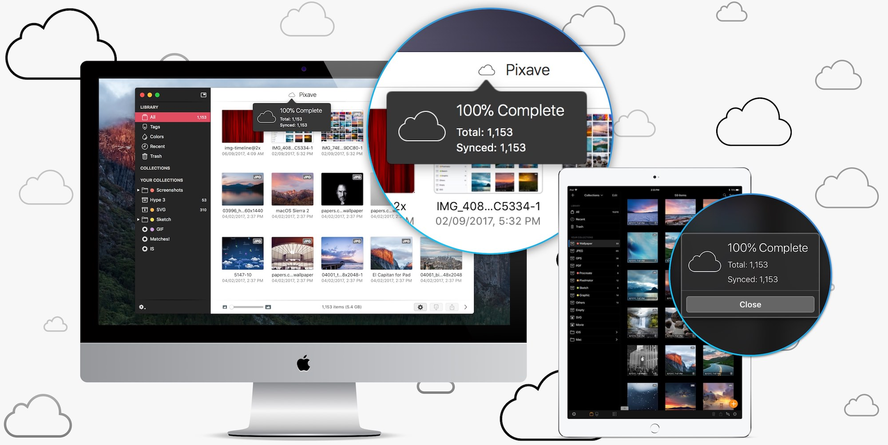
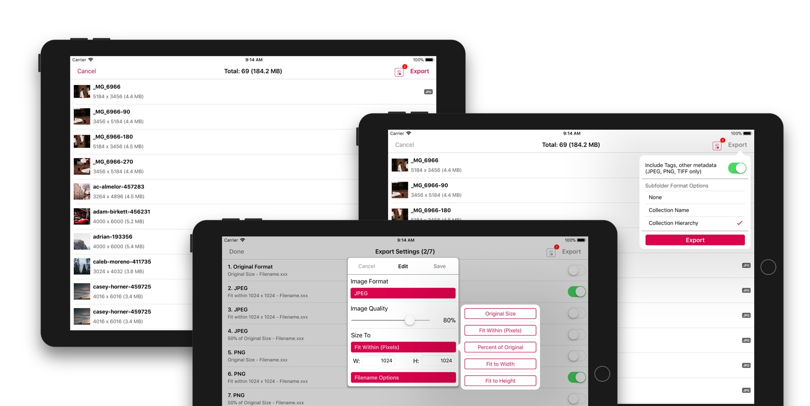

Introducing Pixave for iPad

There is a whole world that we get from images. A single picture can fill us with inspiration which, in turn, brings us joy. Such impressions grow to create wonder and amazement for the world. That growth and creation is made possible by you. And Pixave is here to store and organize those inspired moments - to enable you to bring them to mind whenever, wherever you are.
Organizing Inspiration
Pixave - 'Featured' in Mac App Store in 2015 and 2016, and 'Best Application' in 2015 - is back with the powerful iOS 11 as Pixave for iPad. Pixave is a robust image organizer, supporting a diverse range of formats with systematic management using Collections, as well as the extremely handy Smart Collections feature. The easy-to-use Drag and Drop has now been tailored to the iOS platform to work wonders. Now transform your iPad into an exceptional Asset Management system with Pixave for iPad! Your inspirations are precious and Pixave for iPad will help you treasure them.
Easy import media by Drag and Dro
Integrated with Files, Photos, Camera and Web, Map Capture too!
Browser with Tags and Add tags to image by Drag and Drop
Easy Management: info, Rating, Rename, Tags, Move and more...
Edit metadata, Add Tags, View EXIF, IPTC, Map
Easy Import Media by Drag and Drop
By using iOS 11's awesome Drag and Drop feature media can be imported with a minimum of effort. What more is there to say? Plus, Pixave for iPad also offers Share Extension, which allows the user to easily transfer media from various types of programs into Pixave for iPad. Additionally, by using iCloud alongside Pixave for Mac's library many Mac-only formats can be viewed and shared with other application.
Popular Formats
Pixave for iPad supports common image formats such as GIF, JPEG, JPEG 2000, PNG, TIFF, ICNS, PSD, PDF, SVG, BMP, ICO, Camera RAW, EXR, MPO, HEIC, HEIF, MOV, M4V, MP4 as well as document formats from iOS Graphic applications such as *Pages, *Numbers, *Keynote, *Mindnode, *Pixelmator, *Pixelmator Pro, *Sketch, *Audodesk Graphic, and *Procreate. In addtion, Pixave for Mac, iPad users can view a variety of document formats imported on their Macs.
Machine Learning Tagging
Pixave for iPad offers astonishing tagging abilities. The contents of an image are detected to automatically create or add tags, allowing easy access for the user. To provide the most convenient environment for tagging Pixave for iPad uses 'Machine learning'. Machine learning is a technology that allow computers to learn and then use the learned knowledge to perform specific tasks, to behave more like a person than a computer. Integrated via the new, blazing fast Core ML framework, machine learning lets Pixave for iPad detect and understand various contents within images..
Machine Learning Tagging Because the contents of an image are detected and tags automatically created and added, you no longer need to waste time with unnecessary actions in managing your tags.
Automatic keyword import Now keywords included in the IPTC metadata are automatically registered as tags.
Tagging by Drag and Drop Would you like to apply a number of tags to many images, all in one go? Then simply select the image and drag over to the tag. Try it now!
Adding and searching for tags is a piece of cake. Many tags can be applied immediately to a number of images, and can be searched for along with its tag.
Capture Web & Map
One of Pixave for iPad's wonderful features is its Web & Map Capture ability. By using this feature you can save a desired webpage as an image - an absolute must for web designers. And on top of that, the Map Capture ability is nothing lesser - with it a desired location can be easily searched for and instantly saved as an image. And yet another amazing thing is images saved with Map Capture store the location information within it, so that when shared with others the original location information can also be viewed right away. Nice! Wouldn't you say?
A simple click If you wish to capture a webpage simply press the capture button.
The Map Capture feature provides many Map View modes - map capturing modes ranging from simple 2 dimensions to a 3 dimensional Flyover mode. Capture maps in a variety of ways, with the desired mode, alongside the location information!
All-around viewer
Pixave’s image displaying feature is not limited to only viewing images. Not only can you edit the metadata but you can also use the powerful, Core Image Filters to edit images (JPEG, JPEG 2000, PNG, TIFF only), and animated GIFs. Files such as Pages, Numbers, and Keynote can be easily viewed by using QuickLook. Plus, the built-in PDF, Movie Viewer lets you easily view PDFs and Movies, as well letting you save a part of a movie as Animated GIFs.

Built-in Simple, Powerful viewer with browser
Add effects with awesome filters
Quick Look for Pages, Numbers, Keynote
View PDF
View Movie
Create animated gif from movie
Multiple Libraries
Pixave supports multiple libraries - you can easily create and manage libraries on your iPad or iCloud, and libraries made using iCloud can be shared whith Pixave for Mac for immediate use.

iCloud Sync
Due to its iCloud compatibility, you can sync your Pixave for iPad libraries, with its multiple libraries structure, with iCloud. Users using both Pixave for Mac and Pixave for iPad will find this an extremely useful feature. Pixave for iPad and iCloud enjoy an intimate relationship.
Exciting Export
Even exporting has evolved. Alongside the basic function of exporting according to image type, you can also adjust the image size in set increments, customize the file naming pattern. Tags you have inserted and managed are now also included within the image during export.
Create a preset Format, Pixel, Scale, the extremely flexible File Rename setting and combine all these parameters to create a preset.
Export with tags Do you have a tag that has been added? Then they will naturally be included when exporting. Pixave’s Export feature certainly caters for the industry standard.
App Reviews & Twitter
Perfect for collecting and organizing inspiration! ★★★★★
As creative designer every day I see a lot of things at the web (or in my own photo collection) that inspire me. I’ve always had a hard time to collect and organize those snapshots and images. But with Pixave it’s just fun! Perfect app and syncs very nicely between iMac, MacBook Pro and now iPad as well; neat stuff, just fab!
Awesome! ★★★★★
Pixave is one of the best options for organizing your files for the Mac and now for iOS. You can sync to your favorite cloud service, including iCloud Drive which syncs files across computers and devices.
Great! ★★★★★
Fast, reliable and cool
Keeps getting better and better ★★★★★
Every update the app gets better and better, recommended for all visual designers indeed. Many apps like this have gone to a subscription model which for an app that just about collecting and tag images soon feels overpriced. Pixave is worth every penny, get it on macOS as well you will not regret. Drag and drop support on iPad is amazing !
Simply Amazing. It Just Works ★★★★★
Love how everything just seamlessly works. Keep up the great work üëçüèº
Great app ★★★★★
Can’t complain. Everything works like a charm. If you have the desktop version already this is a must buy.
Support
We're always here to help with any question or comments - feel free to contact us.
Pixave's 'Preferences > Send Feedback...' is perfect for privately sending us issues and feedback.
Free!

Category: Productivity
Latest Version: 2.6.1 ()
Compatibility: Requires iOS 11 or later. compatible with iPad